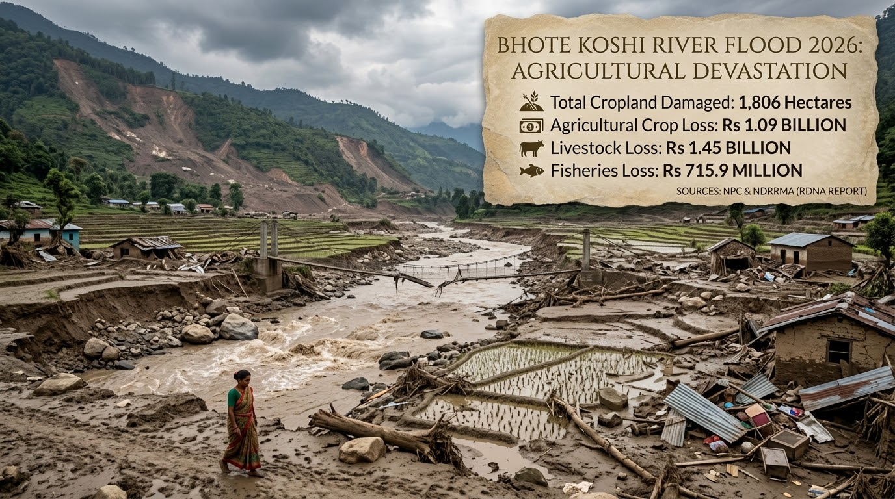

By Pradip Babu Khadka
बाढीपछि, किसानले के रोप्ने?
बाढीपछि कृषि पुनरुत्थान गर्दा बाली तथा प्रजाति विविधता, किसानको लाभ, बीउ प्रणाली, बजार र जलवायु उत्थानशीलतालाई कसरी जोड्न सकिन्छ भन्नेबारे यस लेखले चर्चा गर्छ।
Read the full article
By Pradip Babu Khadka
बाढीपछि कृषि पुनरुत्थान गर्दा बाली तथा प्रजाति विविधता, किसानको लाभ, बीउ प्रणाली, बजार र जलवायु उत्थानशीलतालाई कसरी जोड्न सकिन्छ भन्नेबारे यस लेखले चर्चा गर्छ।
Read the full article